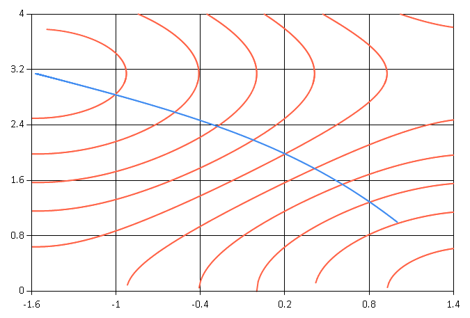

Gradient Descent
The gradient descent algorithm is an optimization algorithm for finding a local minimum of a function near a starting point, taking successive steps in the direction of the negative of the gradient.
Using the DiffSharp library, the following code implements gradient descent with a fixed step size, stopping when the norm of the gradient falls below a given threshold.
1: 2: 3: 4: 5: 6: 7: 8: 9: 10: 11: |
open DiffSharp.AD.Forward.Vector open DiffSharp.Util.LinearAlgebra // Gradient descent, with function f, starting at x0, step size a, threshold t let argmin f x0 (a:float) t = // Descending sequence, with state s (current x, gradient of f at current x) let gd = Seq.unfold (fun s -> if norm (snd s) < t then None else Some(fst s, (fst s - a * snd s, grad f (fst s)))) (x0, grad f x0) (Seq.last gd, gd) |
Let us compute \(\; \underset{x,\;y}{\operatorname{argmin}} (\sin x + \cos y)\).
1: 2: 3: 4: |
// Find the minimum of Sin(x) + Cos(y) // Start from (1, 1), step size 0.01, threshold 0.00001 let xmin, xseq = argmin (fun x -> (sin x.[0]) + cos x.[1]) (vector [|1.; 1.|]) 0.01 0.00001 |
|
A minimum is found at \((x, y) = (-1.570787495, 3.141587987)\).
We can draw some contours of \(\sin x + \cos y\) and show the trajectory of gradient descent, using the F# Charting library.
1: 2: 3: 4: 5: 6: 7: 8: 9: 10: 11: 12: |
open FSharp.Charting // Draw the contour line Sin(x) + Cos(y) = v let c v = Chart.Line(List.append [for x in -1.6..0.01..1.4->(x,acos(v-sin x))] [for y in 3.0..0.01..4.->(asin(v-cos y),y)], Color = System.Drawing.Color.Tomato) // Draw some contours and combine with the graph of the descent xseq Chart.Combine(List.append [for x in -2.2..0.4..2. -> c x] [Chart.Line(Seq.map (fun (x:Vector<float>)->(x.[0],x.[1])) xseq)] ).WithXAxis(Min = -1.6, Max = 1.4, Title="x") .WithYAxis(Min = 0., Max = 4., Title="y") |
This gives us the following chart.

namespace DiffSharp
namespace DiffSharp.AD
module Forward
from DiffSharp.AD
from DiffSharp.AD
module Vector
from DiffSharp.AD.Forward
from DiffSharp.AD.Forward
namespace DiffSharp.Util
module LinearAlgebra
from DiffSharp.Util
from DiffSharp.Util
val argmin : f:(Vector<DiffSharp.AD.Forward.Dual> -> DiffSharp.AD.Forward.Dual) -> x0:Vector<float> -> a:float -> t:float -> Vector<float> * seq<Vector<float>>
Full name: Examples-gradientdescent.argmin
Full name: Examples-gradientdescent.argmin
val f : (Vector<DiffSharp.AD.Forward.Dual> -> DiffSharp.AD.Forward.Dual)
val x0 : Vector<float>
val a : float
Multiple items
val float : value:'T -> float (requires member op_Explicit)
Full name: Microsoft.FSharp.Core.Operators.float
--------------------
type float = System.Double
Full name: Microsoft.FSharp.Core.float
--------------------
type float<'Measure> = float
Full name: Microsoft.FSharp.Core.float<_>
val float : value:'T -> float (requires member op_Explicit)
Full name: Microsoft.FSharp.Core.Operators.float
--------------------
type float = System.Double
Full name: Microsoft.FSharp.Core.float
--------------------
type float<'Measure> = float
Full name: Microsoft.FSharp.Core.float<_>
val t : float
val gd : seq<Vector<float>>
module Seq
from Microsoft.FSharp.Collections
from Microsoft.FSharp.Collections
val unfold : generator:('State -> ('T * 'State) option) -> state:'State -> seq<'T>
Full name: Microsoft.FSharp.Collections.Seq.unfold
Full name: Microsoft.FSharp.Collections.Seq.unfold
val s : Vector<float> * Vector<float>
val norm : v:Vector<'T> -> 'T (requires member get_Zero and member ( + ) and member ( - ) and member ( * ) and member ( / ) and member ( ~- ) and member Sqrt and member op_Explicit)
Full name: DiffSharp.Util.LinearAlgebra.norm
Full name: DiffSharp.Util.LinearAlgebra.norm
val snd : tuple:('T1 * 'T2) -> 'T2
Full name: Microsoft.FSharp.Core.Operators.snd
Full name: Microsoft.FSharp.Core.Operators.snd
union case Option.None: Option<'T>
union case Option.Some: Value: 'T -> Option<'T>
val fst : tuple:('T1 * 'T2) -> 'T1
Full name: Microsoft.FSharp.Core.Operators.fst
Full name: Microsoft.FSharp.Core.Operators.fst
val grad : f:(Vector<DiffSharp.AD.Forward.Dual> -> DiffSharp.AD.Forward.Dual) -> x:Vector<float> -> Vector<float>
Full name: DiffSharp.AD.Forward.Vector.grad
Full name: DiffSharp.AD.Forward.Vector.grad
val last : source:seq<'T> -> 'T
Full name: Microsoft.FSharp.Collections.Seq.last
Full name: Microsoft.FSharp.Collections.Seq.last
val xmin : Vector<float>
Full name: Examples-gradientdescent.xmin
Full name: Examples-gradientdescent.xmin
val xseq : seq<Vector<float>>
Full name: Examples-gradientdescent.xseq
Full name: Examples-gradientdescent.xseq
val x : Vector<DiffSharp.AD.Forward.Dual>
val sin : value:'T -> 'T (requires member Sin)
Full name: Microsoft.FSharp.Core.Operators.sin
Full name: Microsoft.FSharp.Core.Operators.sin
val cos : value:'T -> 'T (requires member Cos)
Full name: Microsoft.FSharp.Core.Operators.cos
Full name: Microsoft.FSharp.Core.Operators.cos
val vector : v:'a [] -> Vector<'a> (requires member get_Zero and member ( + ) and member ( - ) and member ( * ) and member ( / ) and member ( ~- ) and member Sqrt and member op_Explicit)
Full name: DiffSharp.Util.LinearAlgebra.vector
Full name: DiffSharp.Util.LinearAlgebra.vector
val printf : format:Printf.TextWriterFormat<'T> -> 'T
Full name: Microsoft.FSharp.Core.ExtraTopLevelOperators.printf
Full name: Microsoft.FSharp.Core.ExtraTopLevelOperators.printf
namespace FSharp
namespace FSharp.Charting
val c : v:float -> ChartTypes.GenericChart
Full name: Examples-gradientdescent.c
Full name: Examples-gradientdescent.c
val v : float
type Chart =
static member Area : data:seq<#value> * ?Name:string * ?Title:string * ?Labels:#seq<string> * ?Color:Color * ?XTitle:string * ?YTitle:string -> GenericChart
static member Area : data:seq<#key * #value> * ?Name:string * ?Title:string * ?Labels:#seq<string> * ?Color:Color * ?XTitle:string * ?YTitle:string -> GenericChart
static member Bar : data:seq<#value> * ?Name:string * ?Title:string * ?Labels:#seq<string> * ?Color:Color * ?XTitle:string * ?YTitle:string -> GenericChart
static member Bar : data:seq<#key * #value> * ?Name:string * ?Title:string * ?Labels:#seq<string> * ?Color:Color * ?XTitle:string * ?YTitle:string -> GenericChart
static member BoxPlotFromData : data:seq<#key * #seq<'a2>> * ?Name:string * ?Title:string * ?Color:Color * ?XTitle:string * ?YTitle:string * ?Percentile:int * ?ShowAverage:bool * ?ShowMedian:bool * ?ShowUnusualValues:bool * ?WhiskerPercentile:int -> GenericChart (requires 'a2 :> value)
static member BoxPlotFromStatistics : data:seq<#key * #value * #value * #value * #value * #value * #value> * ?Name:string * ?Title:string * ?Labels:#seq<string> * ?Color:Color * ?XTitle:string * ?YTitle:string * ?Percentile:int * ?ShowAverage:bool * ?ShowMedian:bool * ?ShowUnusualValues:bool * ?WhiskerPercentile:int -> GenericChart
static member Bubble : data:seq<#value * #value> * ?Name:string * ?Title:string * ?Labels:#seq<string> * ?Color:Color * ?XTitle:string * ?YTitle:string * ?BubbleMaxSize:int * ?BubbleMinSize:int * ?BubbleScaleMax:float * ?BubbleScaleMin:float * ?UseSizeForLabel:bool -> GenericChart
static member Bubble : data:seq<#key * #value * #value> * ?Name:string * ?Title:string * ?Labels:#seq<string> * ?Color:Color * ?XTitle:string * ?YTitle:string * ?BubbleMaxSize:int * ?BubbleMinSize:int * ?BubbleScaleMax:float * ?BubbleScaleMin:float * ?UseSizeForLabel:bool -> GenericChart
static member Candlestick : data:seq<#value * #value * #value * #value> * ?Name:string * ?Title:string * ?Labels:#seq<string> * ?Color:Color * ?XTitle:string * ?YTitle:string -> CandlestickChart
static member Candlestick : data:seq<#key * #value * #value * #value * #value> * ?Name:string * ?Title:string * ?Labels:#seq<string> * ?Color:Color * ?XTitle:string * ?YTitle:string -> CandlestickChart
...
Full name: FSharp.Charting.Chart
static member Area : data:seq<#value> * ?Name:string * ?Title:string * ?Labels:#seq<string> * ?Color:Color * ?XTitle:string * ?YTitle:string -> GenericChart
static member Area : data:seq<#key * #value> * ?Name:string * ?Title:string * ?Labels:#seq<string> * ?Color:Color * ?XTitle:string * ?YTitle:string -> GenericChart
static member Bar : data:seq<#value> * ?Name:string * ?Title:string * ?Labels:#seq<string> * ?Color:Color * ?XTitle:string * ?YTitle:string -> GenericChart
static member Bar : data:seq<#key * #value> * ?Name:string * ?Title:string * ?Labels:#seq<string> * ?Color:Color * ?XTitle:string * ?YTitle:string -> GenericChart
static member BoxPlotFromData : data:seq<#key * #seq<'a2>> * ?Name:string * ?Title:string * ?Color:Color * ?XTitle:string * ?YTitle:string * ?Percentile:int * ?ShowAverage:bool * ?ShowMedian:bool * ?ShowUnusualValues:bool * ?WhiskerPercentile:int -> GenericChart (requires 'a2 :> value)
static member BoxPlotFromStatistics : data:seq<#key * #value * #value * #value * #value * #value * #value> * ?Name:string * ?Title:string * ?Labels:#seq<string> * ?Color:Color * ?XTitle:string * ?YTitle:string * ?Percentile:int * ?ShowAverage:bool * ?ShowMedian:bool * ?ShowUnusualValues:bool * ?WhiskerPercentile:int -> GenericChart
static member Bubble : data:seq<#value * #value> * ?Name:string * ?Title:string * ?Labels:#seq<string> * ?Color:Color * ?XTitle:string * ?YTitle:string * ?BubbleMaxSize:int * ?BubbleMinSize:int * ?BubbleScaleMax:float * ?BubbleScaleMin:float * ?UseSizeForLabel:bool -> GenericChart
static member Bubble : data:seq<#key * #value * #value> * ?Name:string * ?Title:string * ?Labels:#seq<string> * ?Color:Color * ?XTitle:string * ?YTitle:string * ?BubbleMaxSize:int * ?BubbleMinSize:int * ?BubbleScaleMax:float * ?BubbleScaleMin:float * ?UseSizeForLabel:bool -> GenericChart
static member Candlestick : data:seq<#value * #value * #value * #value> * ?Name:string * ?Title:string * ?Labels:#seq<string> * ?Color:Color * ?XTitle:string * ?YTitle:string -> CandlestickChart
static member Candlestick : data:seq<#key * #value * #value * #value * #value> * ?Name:string * ?Title:string * ?Labels:#seq<string> * ?Color:Color * ?XTitle:string * ?YTitle:string -> CandlestickChart
...
Full name: FSharp.Charting.Chart
static member Chart.Line : data:seq<#value> * ?Name:string * ?Title:string * ?Labels:#seq<string> * ?Color:System.Drawing.Color * ?XTitle:string * ?YTitle:string -> ChartTypes.GenericChart
static member Chart.Line : data:seq<#key * #value> * ?Name:string * ?Title:string * ?Labels:#seq<string> * ?Color:System.Drawing.Color * ?XTitle:string * ?YTitle:string -> ChartTypes.GenericChart
static member Chart.Line : data:seq<#key * #value> * ?Name:string * ?Title:string * ?Labels:#seq<string> * ?Color:System.Drawing.Color * ?XTitle:string * ?YTitle:string -> ChartTypes.GenericChart
Multiple items
module List
from Microsoft.FSharp.Collections
--------------------
type List<'T> =
| ( [] )
| ( :: ) of Head: 'T * Tail: 'T list
interface IEnumerable
interface IEnumerable<'T>
member Head : 'T
member IsEmpty : bool
member Item : index:int -> 'T with get
member Length : int
member Tail : 'T list
static member Cons : head:'T * tail:'T list -> 'T list
static member Empty : 'T list
Full name: Microsoft.FSharp.Collections.List<_>
module List
from Microsoft.FSharp.Collections
--------------------
type List<'T> =
| ( [] )
| ( :: ) of Head: 'T * Tail: 'T list
interface IEnumerable
interface IEnumerable<'T>
member Head : 'T
member IsEmpty : bool
member Item : index:int -> 'T with get
member Length : int
member Tail : 'T list
static member Cons : head:'T * tail:'T list -> 'T list
static member Empty : 'T list
Full name: Microsoft.FSharp.Collections.List<_>
val append : list1:'T list -> list2:'T list -> 'T list
Full name: Microsoft.FSharp.Collections.List.append
Full name: Microsoft.FSharp.Collections.List.append
val x : float
val acos : value:'T -> 'T (requires member Acos)
Full name: Microsoft.FSharp.Core.Operators.acos
Full name: Microsoft.FSharp.Core.Operators.acos
val y : float
val asin : value:'T -> 'T (requires member Asin)
Full name: Microsoft.FSharp.Core.Operators.asin
Full name: Microsoft.FSharp.Core.Operators.asin
namespace System
namespace System.Drawing
type Color =
struct
member A : byte
member B : byte
member Equals : obj:obj -> bool
member G : byte
member GetBrightness : unit -> float32
member GetHashCode : unit -> int
member GetHue : unit -> float32
member GetSaturation : unit -> float32
member IsEmpty : bool
member IsKnownColor : bool
...
end
Full name: System.Drawing.Color
struct
member A : byte
member B : byte
member Equals : obj:obj -> bool
member G : byte
member GetBrightness : unit -> float32
member GetHashCode : unit -> int
member GetHue : unit -> float32
member GetSaturation : unit -> float32
member IsEmpty : bool
member IsKnownColor : bool
...
end
Full name: System.Drawing.Color
property System.Drawing.Color.Tomato: System.Drawing.Color
static member Chart.Combine : charts:seq<ChartTypes.GenericChart> -> ChartTypes.GenericChart
val map : mapping:('T -> 'U) -> source:seq<'T> -> seq<'U>
Full name: Microsoft.FSharp.Collections.Seq.map
Full name: Microsoft.FSharp.Collections.Seq.map
val x : Vector<float>
Multiple items
union case Vector.Vector: 'T [] -> Vector<'T>
--------------------
type Vector<'T (requires member get_Zero and member ( + ) and member ( - ) and member ( * ) and member ( / ) and member ( ~- ) and member Sqrt and member op_Explicit)> =
| ZeroVector of 'T
| Vector of 'T []
member GetNorm : unit -> 'T
member GetUnitVector : unit -> Vector<'T>
member Item : i:int -> 'T
member ToArray : unit -> 'T []
member ToMathematicaString : unit -> string
member ToMatlabString : unit -> string
member FirstItem : 'T
member Length : int
static member Create : v:'T [] -> Vector<'T>
static member Create : n:int * v:'T -> Vector<'T>
static member Create : n:int * f:(int -> 'T) -> Vector<'T>
static member Create : n:int * i:int * v:'T -> Vector<'T>
static member Zero : Vector<'T>
static member init : n:int -> f:(int -> 'T) -> Vector<'T>
static member ( + ) : a:Vector<'T> * b:Vector<'T> -> Vector<'T>
static member ( / ) : a:'a1 * b:Vector<'a2> -> Vector<'a3> (requires member ( / ) and member get_Zero and member ( + ) and member ( - ) and member ( * ) and member ( / ) and member ( ~- ) and member Sqrt and member op_Explicit and member get_Zero and member ( + ) and member ( - ) and member ( * ) and member ( / ) and member ( ~- ) and member Sqrt and member op_Explicit)
static member ( / ) : a:Vector<'a1> * b:'a2 -> Vector<'a3> (requires member get_Zero and member ( + ) and member ( - ) and member ( * ) and member ( / ) and member ( ~- ) and member Sqrt and member op_Explicit and member ( / ) and member get_Zero and member ( + ) and member ( - ) and member ( * ) and member ( / ) and member ( ~- ) and member Sqrt and member op_Explicit)
static member ( / ) : a:Vector<'T> * b:Vector<'T> -> Vector<'T>
static member op_Explicit : v:Vector<'T> -> float []
static member ( * ) : a:'a1 * b:Vector<'a2> -> Vector<'a3> (requires member ( * ) and member get_Zero and member ( + ) and member ( - ) and member ( * ) and member ( / ) and member ( ~- ) and member Sqrt and member op_Explicit and member get_Zero and member ( + ) and member ( - ) and member ( * ) and member ( / ) and member ( ~- ) and member Sqrt and member op_Explicit)
static member ( * ) : a:Vector<'a1> * b:'a2 -> Vector<'a3> (requires member get_Zero and member ( + ) and member ( - ) and member ( * ) and member ( / ) and member ( ~- ) and member Sqrt and member op_Explicit and member ( * ) and member get_Zero and member ( + ) and member ( - ) and member ( * ) and member ( / ) and member ( ~- ) and member Sqrt and member op_Explicit)
static member ( * ) : a:Vector<'T> * b:Vector<'T> -> Vector<'T>
static member ( - ) : a:Vector<'T> * b:Vector<'T> -> Vector<'T>
static member ( ~- ) : a:Vector<'T> -> Vector<'T>
static member sum : v:Vector<'T> -> 'T
Full name: DiffSharp.Util.LinearAlgebra.Vector<_>
union case Vector.Vector: 'T [] -> Vector<'T>
--------------------
type Vector<'T (requires member get_Zero and member ( + ) and member ( - ) and member ( * ) and member ( / ) and member ( ~- ) and member Sqrt and member op_Explicit)> =
| ZeroVector of 'T
| Vector of 'T []
member GetNorm : unit -> 'T
member GetUnitVector : unit -> Vector<'T>
member Item : i:int -> 'T
member ToArray : unit -> 'T []
member ToMathematicaString : unit -> string
member ToMatlabString : unit -> string
member FirstItem : 'T
member Length : int
static member Create : v:'T [] -> Vector<'T>
static member Create : n:int * v:'T -> Vector<'T>
static member Create : n:int * f:(int -> 'T) -> Vector<'T>
static member Create : n:int * i:int * v:'T -> Vector<'T>
static member Zero : Vector<'T>
static member init : n:int -> f:(int -> 'T) -> Vector<'T>
static member ( + ) : a:Vector<'T> * b:Vector<'T> -> Vector<'T>
static member ( / ) : a:'a1 * b:Vector<'a2> -> Vector<'a3> (requires member ( / ) and member get_Zero and member ( + ) and member ( - ) and member ( * ) and member ( / ) and member ( ~- ) and member Sqrt and member op_Explicit and member get_Zero and member ( + ) and member ( - ) and member ( * ) and member ( / ) and member ( ~- ) and member Sqrt and member op_Explicit)
static member ( / ) : a:Vector<'a1> * b:'a2 -> Vector<'a3> (requires member get_Zero and member ( + ) and member ( - ) and member ( * ) and member ( / ) and member ( ~- ) and member Sqrt and member op_Explicit and member ( / ) and member get_Zero and member ( + ) and member ( - ) and member ( * ) and member ( / ) and member ( ~- ) and member Sqrt and member op_Explicit)
static member ( / ) : a:Vector<'T> * b:Vector<'T> -> Vector<'T>
static member op_Explicit : v:Vector<'T> -> float []
static member ( * ) : a:'a1 * b:Vector<'a2> -> Vector<'a3> (requires member ( * ) and member get_Zero and member ( + ) and member ( - ) and member ( * ) and member ( / ) and member ( ~- ) and member Sqrt and member op_Explicit and member get_Zero and member ( + ) and member ( - ) and member ( * ) and member ( / ) and member ( ~- ) and member Sqrt and member op_Explicit)
static member ( * ) : a:Vector<'a1> * b:'a2 -> Vector<'a3> (requires member get_Zero and member ( + ) and member ( - ) and member ( * ) and member ( / ) and member ( ~- ) and member Sqrt and member op_Explicit and member ( * ) and member get_Zero and member ( + ) and member ( - ) and member ( * ) and member ( / ) and member ( ~- ) and member Sqrt and member op_Explicit)
static member ( * ) : a:Vector<'T> * b:Vector<'T> -> Vector<'T>
static member ( - ) : a:Vector<'T> * b:Vector<'T> -> Vector<'T>
static member ( ~- ) : a:Vector<'T> -> Vector<'T>
static member sum : v:Vector<'T> -> 'T
Full name: DiffSharp.Util.LinearAlgebra.Vector<_>